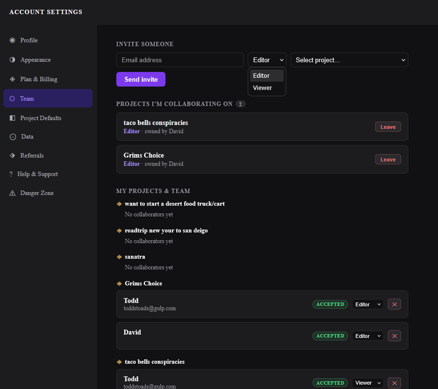
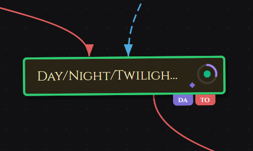
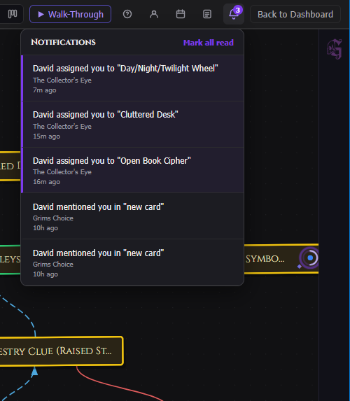

Team and Collaboration
GrimFolio supports project collaboration on Studio plans. Invite other GrimFolio users to your projects as Editors or Viewers. They see the project in their Dashboard alongside their own work and can contribute based on their role. The Team tab in Account Settings is where all collaboration is managed — incoming invitations, active collaborations, and outgoing invites.

Roles
GrimFolio collaboration has two roles.
| Role | What they can do |
|---|---|
| Editor | View and edit the project, add and modify cards, use Grim, draw, and update any content. |
| Viewer | Read-only access. Can view the canvas, Walk-Through, and card content but cannot make changes. |
Editors see the full Stage 2 canvas with all controls active. Viewers see the canvas with editing interactions disabled. Viewers do not see the Grim chat — they see the project's generated summary instead if one exists.
Pending Invitations
If someone has invited you to collaborate on one of their projects it appears in the Pending invitations section of the Team tab. Each card shows the project name, your assigned role, the name of the person who invited you, and when the invite was sent.
Click Accept to join the project. It will appear in your Dashboard alongside your own projects with an Editor or Viewer badge. Click Decline to remove the invite without joining.
Projects You Are Collaborating On
Once you accept an invite the project appears in the Projects I'm collaborating on section. Each card shows the project name, the owner's name, and your role.
Click Leave to remove yourself from the project. A confirmation prompt appears before the action completes. Leaving is immediate — the project disappears from your Dashboard and you lose access.
Inviting Collaborators Studio
Studio accounts have an Invite someone form at the top of the Team tab.
| Field | Notes |
|---|---|
| Email address | The person's GrimFolio account email. They must already have a GrimFolio account. |
| Role | Editor or Viewer. Can be changed after the invite is accepted. |
| Project | Which of your projects to invite them to. One project per invite submission. |
Click Send invite. The invite appears in the recipient's Team tab as a pending invitation.
To invite the same person to multiple projects submit a separate invite for each project.
Managing Your Team Studio
The My projects and team section lists all your projects that have collaborators along with their current collaborators. Each collaborator row shows:
| Element | What it does |
|---|---|
| Name and email | The collaborator's display name and email. |
| Status badge | Accepted (green) or Pending (gray). Pending means they have not responded yet. |
| Role selector | Change the role between Editor and Viewer at any time. Takes effect immediately. |
| Remove button | Removes the collaborator from the project. Confirmation prompt appears first. |
Projects with no collaborators show a "No collaborators yet" placeholder. They still appear in the list once you have sent at least one invite to that project.
Card Assignment
Cards can be assigned to one or more members on a project. The pool of assignable people is the project owner plus all accepted collaborators.
Assigning a Card
Open any card detail drawer on the canvas and click the Assignees field. A member picker appears. Click a name to assign them, then pick a color for their flag. Multiple team members can be assigned to the same card.

Assignee Flags on the Canvas
Each assigned member's initials appear as a small colored flag on the bottom-right corner of the card tile on the canvas. Multiple assignees stack as overlapping flags. No drawer needed to see who owns what at a glance.
Ownership Report
Export a full breakdown of all cards by assignee as a PDF. Open the Export dropdown in the top bar and choose Ownership Report. The export groups cards by team member with a summary bar at the top showing total cards, assigned count, team member count, and unassigned count. Unassigned cards appear last.
Comments & @Mentions
Every card has a threaded comment section at the bottom of the card detail drawer. Use it for async communication directly on the card — questions, decisions, handoff notes, or anything that should stay with that card rather than in a separate thread.
Posting a Comment
Open the card detail drawer and scroll to Comments. Type and press Enter to post. Comments are up to 2,000 characters. Editors and project owners can post. Viewers can read but cannot post.
@Mentions
Type @ inside a comment to mention a project member. A picker lists everyone with access to the project. Select a name to insert the mention. The mentioned person receives a notification in their notifications panel.
Notifications
GrimFolio sends in-app notifications when something happens that needs your attention. The notification bell in the top bar shows an unread badge when new notifications arrive.
| Notification type | When it fires |
|---|---|
| Assignment | A card is assigned to you. |
| Mention | Someone @mentions you in a comment. |
| Unassignment | You are removed from a card's assignees. |
Click the bell to open the notifications panel. The 50 most recent notifications are shown, newest first. Click Mark all read to clear the unread badge, or dismiss individual notifications.

Collaborated Projects on the Dashboard
Projects you have been invited to appear in your Dashboard project grid alongside your own projects. They show an Editor or Viewer badge on the card so you can tell at a glance which projects you own and which you are collaborating on.
The ··· menu on a collaborated project shows View only instead of Rename and Delete — you cannot rename or delete projects you do not own.